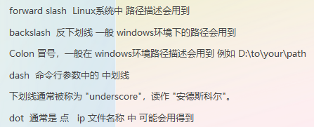

questions
chatGML 问题模板 代码截图识别
请将图片中的代码，识别输出(包含注释)。请注意，识别的文本是python代码，请输出格式化后的python代码。 请将图片中的文本，识别输出（包含表头）。请注意，识别的文本是csv格式的文本，请按照`csv`格式输出。python, sqlmap报错 AttributeError: module ‘collections‘ has no attribute ‘Callable‘
进入python安装目录 如我的在e盘下修改py3k_compat.py这个文件E:\python\lib\site-packages\pyreadline\py3k_compat.py
在第8行把 return isinstance(x, collections.Callable)改为 return isinstance(x, collections.abc.Callable)即可正常使用
- 问题描述
 这个脚本只能用bash执行，用sh执行报错
这个脚本只能用bash执行，用sh执行报错
 现在有个场景是必须用sh来执行，不能用bash，要怎么改脚本
现在有个场景是必须用sh来执行，不能用bash，要怎么改脚本
解决方法
ushield_list=`echo "163c0625" "8102155b" "8005155b" "8006155b" "04011780" "04101780" "10041ea8" "0705096e" `
for i in $ushield_list
do
echo $i
done
- 计算机常用术语 
- Windows WSL 卸载 ubuntu

- ubuntu系统如何修改hostname ```text
- 需要编辑/etc/hostname文件。使用文本编辑器以超级用户权限打开此文件： sudo vi /etc/hostname 删除旧的主机名，并输入新的主机名。保存并关闭文件。
- 同样，您还需要编辑/etc/hosts文件，以确保该文件中的主机名与您刚刚设置的新主机名相匹配。同样使用文本编辑器以超级用户权限打开此文件： sudo vi /etc/hosts 找到包含127.0.1.1的行，并更改该行的主机名部分以匹配新的主机名。保存并关闭文件。
- 重启计算机或注销会话以使更改生效： sudo reboot
或者如果您只是想测试更改而不立即重启： hostnamectl 这将显示当前的主机名设置，包括您刚才所做的更改。 ```
问题描述 ctr镜像导入报错ctr: content digest sha256:xxxxxx not found
解决方案
现象：
直接导入j镜像可能会出现类似于 ctr: content digest sha256:xxxxxx not found
解决办法：
拉取镜像、导出镜像时，加上--platform